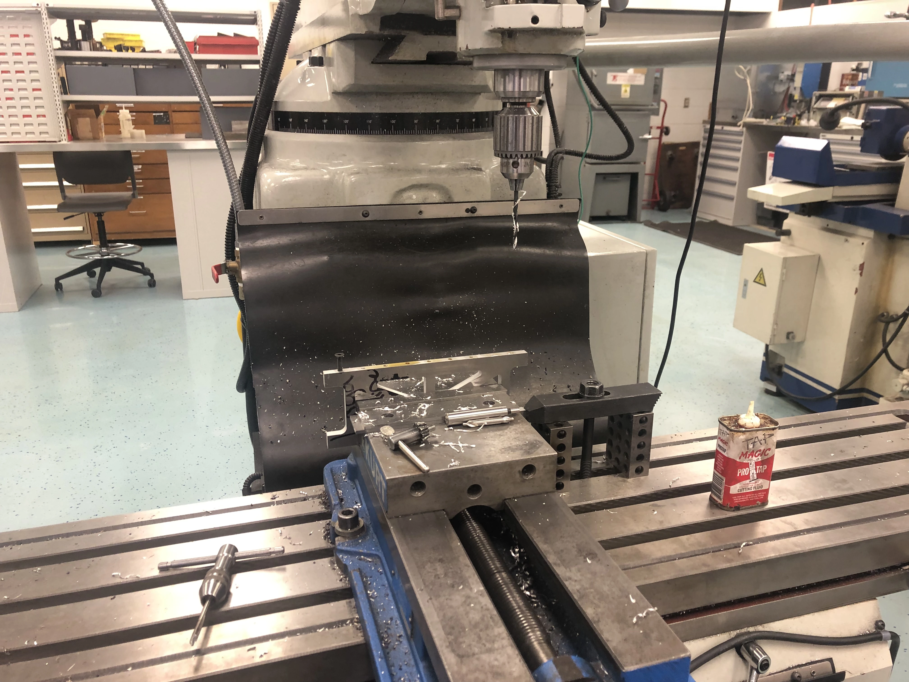
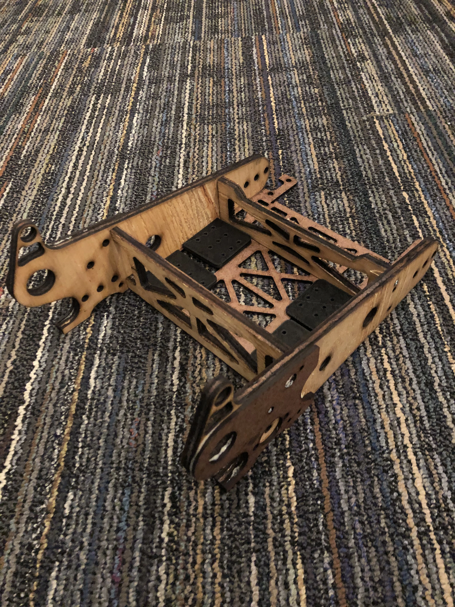
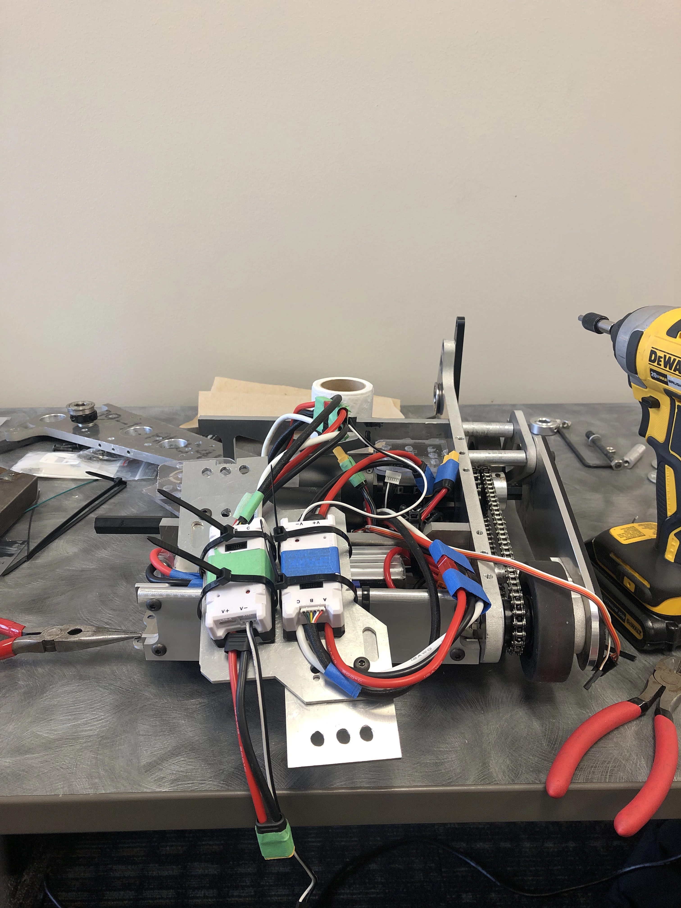
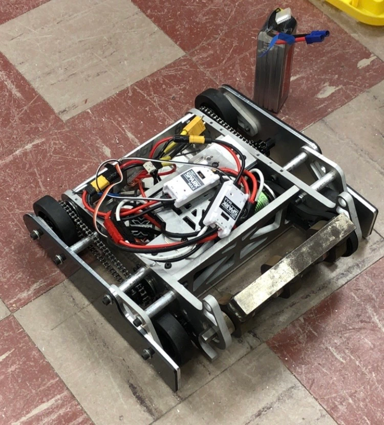
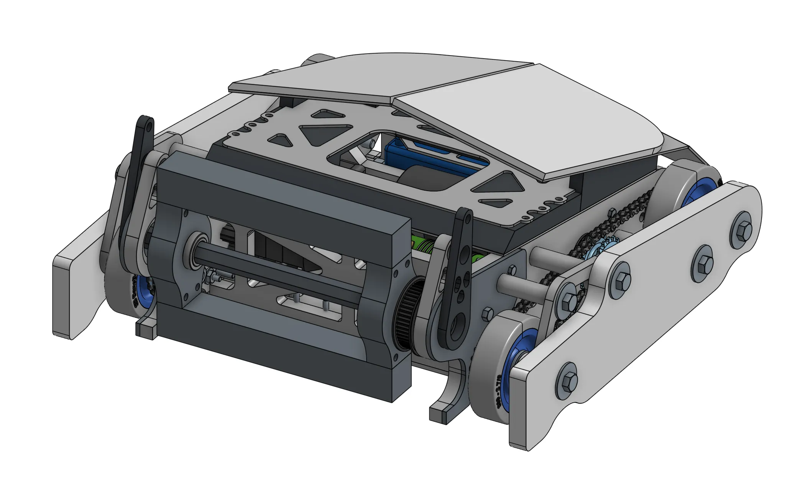

Before we started our design, we had to consider a few basic considerations in mind:
- The robot must comply with the 30 lb weight limit.
- The chassis should be rigid enough to withstand high impacts and carry loads from the spinning weapon.
- Materials must be relatively cheap and easily sourced (can't do titanium!).
- Electronics in the interior of the robot should be securedly fastened.
The initial basic idea we wanted for Cowbot was inspired by the sloped/angled armor that Soviet tanks
used during WWII. We also theorized that loading multiple bends on one cut would be efficient for manufacturing,
as it eliminated the need for fasteners.


Upon further developing the idea through initial CAD prototypes, we realized that to pull off the tolerances
required for the aforementioned bending operations would require an act of God. Also, we severely underestimated
the spatial demands of a drivetrain. We instead settled on the good old 'tab and slot' approach for the chassis, which
most other teams used. For the drivetrain, we chose to use the NEO motor and planetary gearbox sets since they were
relatively easy to use. Chain drive was selected to avoid frictional and tension losses that we theorized with a belt-drive
approach.


For the weapon, we used a slightly loose timing belt to allow for efficient mechanical transfer (as opposed to relying on friction)
while allowing for belt slippage during weapon impact events. 3/8" aluminum was chosen for the chassis since it was lightweight and
was the only available thickness that the club had in abundance. HDPE was used for the side skirts so that it can plastically deform
on impact to help dissipate kinetic energy. A large cover with aliminum and plastic sheets protected the top from overhead attacks.
We prototyped this chassis by using laser cut wood as a surrogate.


We put the drive motors in a staggered configuration so the internal volume could be as compact as possible. Theoretically, this would
prevent loose, internal components from moving around too much. Our ground clearance was made to be as small as reasonably possible to
prevent opposing vertical spinners from catching the underside of the robot.


One minor deviation we made from the rest of the club was that we switched from DSMX to ELRS radio protocol, which decreased our latency
substantially. While the impact of this change on the overall project was relatively tiny, it reflected a broader mindset of our
willingness to adopt a different solution when it offered a clear advantage. Also, it was open source and open source is free and therefore cool.


We built our development workspace in Onshape, which allows multiple team members to simultaneously model on the same project files,
as all information is stored online in the cloud. Additionally, Onshape enables modeling through web browsers, opening up the ability
for our team to work on almost any platform, regardless of their hardware specifications. Onshape also provides publicly available
scripting tools for tasks such as weight reduction.